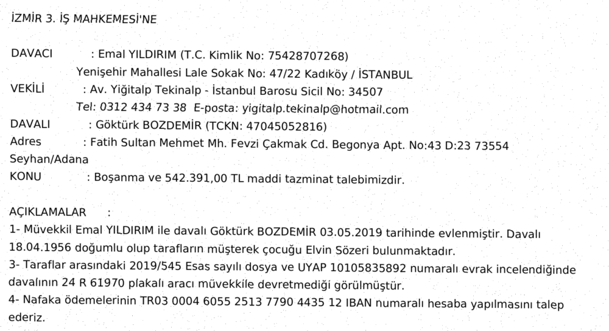
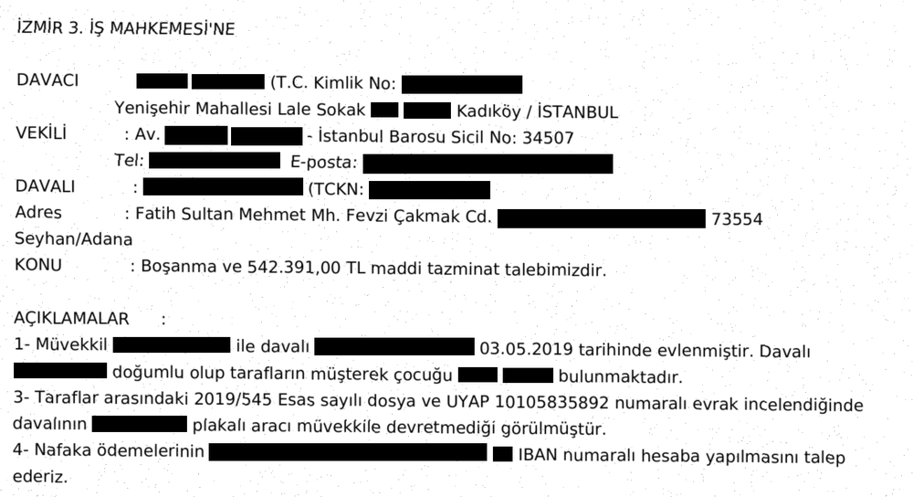

Belgedeki kişisel verileri saniyeler içinde maskeleyin.
Ad, T.C. kimlik, adres, telefon, IBAN, sağlık bilgisi… Katip bulur ve karartır; siz kontrol edip indirirsiniz.
Belgeyi buraya bırakın veya seçin
PDF · fotoğraf · Word · UYAP .udf · metin


- 1Belgeyi bırakın
- 2Karartılanları kontrol edin
- 3Maskeli halini indirin
Claude ile kullanın
Claude belgeyi görmeden önce Katip kişisel verileri bilgisayarınızda maskeler
dilekce.docx dosyasını özetle, cevap dilekçesi taslağı yaz ve gerçek isimlerle Masaüstüne kaydet.
Katip
mask_file 16 kişisel veri maskelendi · belge bilgisayarınızda kaldıClaudeDavacı [AD SOYAD-1] (T.C. [TCKN-1]), davalı [AD SOYAD-2] aleyhine boşanma ve 542.391 TL maddi tazminat istiyor; vekili [AD SOYAD-3]. Cevap dilekçesi taslağı hazır.
Katip
restore_to_file Gerçek isimler bilgisayarınızda geri kondu: Masaüstü/cevap.docxClaude yalnızca köşeli parantezli halini görür; gerçek değerler bilgisayarınızdan çıkmaz.
Kurulum · 2 dakika
Claude Desktop
- katip-kalkan.mcpb dosyasını indirin
- Dosyaya çift tıklayın, Claude kurulumu açar
Claude Code
claude plugin marketplace add fikrifirat/katip
claude plugin install katip-kalkan@katipPython 3.10 veya üstü gerekir. uv kuruluysa isim modeli de otomatik gelir. Ayrıntılar